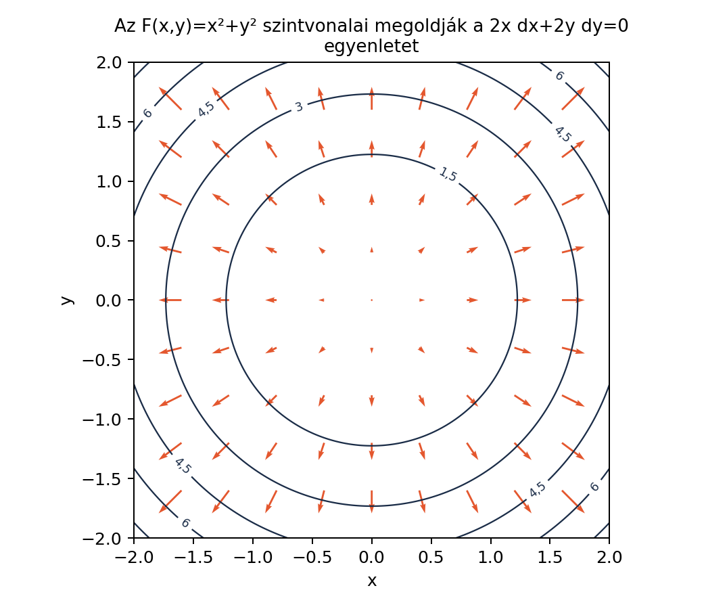

36.1 Egzakt differenciálegyenletek
és integráló tényező
36.1.1 Motiváció
Az eddigi elsőrendű egyenleteket többnyire explicit alakban írtuk
fel:
.
Mérnöki és fizikai modellekben azonban sokszor természetesebb az
úgynevezett differenciálforma:
Ilyen alakban jelenik meg például egy áramlási mező, egy síkbeli
erőtér elemi munkája, vagy a termodinamikában az elemi hőközlés. Ha az
egyenlet bal oldala egy
függvény teljes differenciálja, akkor az egyenlet megoldása egyszerűen
.
Ez éppen a Potenciálos vektormezők és
útfüggetlenség alfejezetben tanult gradiensmező-fogalom közvetlen
rokona: az
vektormező az
gradiensmezője.
36.1.2 Szemléletes kép
Tekintsük az
függvényt. Teljes differenciálja:
A
egyenlet tehát egzakt, megoldásai az
körök. Minden megoldásgörbe egy szintvonal: a differenciálegyenlet azt
mondja, hogy a görbe mentén az
függvény nem változik.

Az F(x,y)=x²+y² szintvonalai megoldják a
2x dx+2y dy=0 egyenletet - A szintvonalak körök; minden kör az F(x,y)=C
implicit megoldás. Az ábra az egyenlet szemléltetésére szolgál, nem
bizonyítás.
A gradiensnyilak merőlegesek a szintvonalakra. Az egzakt egyenlet
megoldása tehát geometriailag azt jelenti, hogy olyan görbéket keresünk,
amelyek mentén egy alkalmas
skalármező állandó.
36.1.3 Egzakt egyenlet: definíció
és megoldásképlet
Definíció. Legyenek
folytonosan differenciálható függvények a
nyílt, összefüggő tartományon. A
differenciálegyenletet egzaktnak nevezzük, ha
létezik olyan
differenciálható függvény, amelyre
Ekkor az
függvényt az egyenlet potenciálfüggvényének
mondjuk.
A definíció alapján
bal oldala a
teljes differenciál. Az alábbi tétel pontosan megadja a
megoldásokat.
Tétel (egzakt egyenlet megoldása). Ha
egzakt, és
potenciálfüggvénye, akkor a differenciálegyenlet megoldásgörbéi az
implicit egyenletű görbék, ahol
tetszőleges, legalábbis ott, ahol
.
Bizonyítás. Legyen
egy differenciálható megoldásgörbe. Ekkor
-et
-szel
osztva:
Az
összetett függvény deriváltja a láncszabállyal:
szerint ez nulla, így
valóban konstans. Megfordítva, ha
,
és ott
,
akkor az implicitfüggvény-tétel biztosítja, hogy lokálisan
differenciálható, és
tehát
,
ami éppen
.
∎
36.1.4 Az egzaktság feltétele
A gyakorlatban először ellenőrizni kell, hogy egy adott egyenlet
egzakt-e. Ehhez hasznos a következő tétel.
Tétel (szükséges feltétel). Ha
és
folytonosan differenciálható, és az
egyenlet egzakt, akkor a
tartomány minden pontjában
Bizonyítás. Mivel a feltétel szerint létezik
,
amelyre
és
,
ezért
Ha
kétszer folytonosan differenciálható, a Young-tétel szerint
,
tehát
.
∎
Megjegyzés. A
feltétel egyszeresen összefüggő tartományon elégséges
is; ez a Potenciálos vektormezők és
útfüggetlenség alfejezet eredménye. Lyukas tartományon viszont nem:
az
példán
,
a mező mégsem írható fel globálisan
gradienseként, mert az egységkörön vett körintegrál
.
Amennyiben a
feltétel teljesül, a potenciálfüggvényt lépésenként
meghatározhatjuk.
Számolási recept: potenciálfüggvény keresése
Ellenőrizzük, hogy
teljesül-e a
tartományon.
Az
egyenletből kiindulva számítsuk ki az
szerinti primitív függvényt:
ahol
egyelőre ismeretlen, csak
-tól
függő függvény. 3. Deriváljuk
-et
szerint, és írjuk fel az
feltételt:
Ebből
-t
kifejezzük. 4. Integráljuk
-t
szerint, így megkapjuk
-t,
tehát
-et.
5. A megoldást
alakban adjuk meg. Kezdeti feltételből
meghatározható. 6. Ellenőrizzük:
és
valóban visszaadja az eredeti együtthatókat.
36.1.6 Kidolgozott példa
potenciálkeresésre
Példa. Oldjuk meg a
egyenletet.
Megoldás. Itt
Ellenőrizzük az egzaktságot:
tehát
,
az egyenlet egzakt. Keressük az
-et.
Az
feltételből:
Most deriváljuk
szerint:
A másik feltétel
,
azaz
így
,
és
.
Tehát
A megoldás:
Ellenőrzés.
,
,
tehát a számolás helyes. Ha például
kezdeti feltételt írunk elő, akkor
,
így a partikuláris megoldás
.
36.1.7 Integráló tényező
Sok egyenlet nem egzakt, de alkalmas
függvénnyel megszorozva egzakttá tehető. Az ilyen
függvényt integráló tényezőnek nevezzük.
Definíció. A
nem azonosan nulla, differenciálható függvényt az
egyenlet integráló tényezőjének nevezzük, ha a
egyenlet már egzakt.
Az általános
keresése nehéz; gyakran elegendő csak
-től
vagy csak
-tól
függő integráló tényezőt találni.
36.1.7.1 Ha a keresett integráló
tényező csak
-től
függ
Tegyük fel, hogy
.
Az egzaktság feltétele a beszorzott egyenletre:
Mivel
nem függ
-tól,
a bal oldal
,
a jobb oldal pedig
.
Így
átrendezve:
Ha a
jobb oldala csak
-től
függ, akkor integrálással
36.1.7.2 Ha a keresett integráló
tényező csak
-tól
függ
Hasonlóan, ha
,
akkor
Az egzaktság feltétele:
azaz
Ha a
jobb oldala csak
-tól
függ, akkor
Számolási recept: integráló tényező keresése
Az adott
alakban számítsuk ki
-et.
Ha az
hányados csak
-től
függ, akkor
.
Ha nem, akkor vizsgáljuk az
hányadost. Ha ez csak
-tól
függ, akkor
.
Szorozzuk be az egyenletet a kapott
-vel,
ellenőrizzük az egzaktságot, majd keressük meg a potenciálfüggvényt a
korábbi recepttel.
A megoldást
alakban adjuk meg.
36.1.8 Kidolgozott példák integráló
tényezőre
Első példa (lineáris egyenlet,
).
Oldjuk meg az
egyenletet. Először írjuk át differenciálformába:
tehát
Kiszámítjuk:
Ez csak
-től
függ, így
Szorozzuk be az egyenletet:
Most az új együtthatók
,
.
Az egzaktság ellenőrzése:
Valóban egzakt. Potenciálkeresés:
,
tehát
Az
feltételből:
így
,
tehát
.
A potenciálfüggvény:
A megoldás:
azaz
Ellenőrzés. Deriválással
így
A megoldás valóban kielégíti az eredeti egyenletet. Ezt a lineáris
esetet az Elsőrendű lineáris egyenletek
alfejezetben már láttuk: a
integráló tényező ott is a standard módszer.
Továbbvitt eredmény. Az itt tanult integráló
tényező-technika a Helyettesítéssel megoldható
egyenletek: homogén és Bernoulli-típus alfejezetben tér vissza: a
Bernoulli-egyenletet lineárisra visszavezetve az ott kapott lineáris
egyenletet ugyanilyen
integráló tényezővel oldjuk meg.
Második példa
().
Oldjuk meg az
egyenletet. Itt
,
.
Kiszámítjuk:
Az
-től
függő integráló tényezőhöz kellene
,
ami nem csak
-től
függ, tehát
módszer most nem alkalmazható. Vizsgáljuk
-t:
Ez csak
-tól
függ, tehát
Szorozzuk be az egyenletet:
Most
,
.
Az egzaktság ellenőrzése:
Potenciálkeresés:
Az
feltételből:
tehát
,
azaz
konstans. Így
A megoldás:
Figyelem. Az
-tel
való szorzás az
egyenesen nem értelmezett, ezért külön meg kell vizsgálni: az
is megoldás, mert ekkor
és
.
A teljes megoldáshalmaz tehát
és
.
Ellenőrzés. Az
és
feltételek valóban teljesülnek. A megoldásból
-t
kifejezhetjük:
de az implicit alak is teljes értékű megoldás.
36.1.9 Valós életbeli alkalmazás:
az entrópia mint integráló tényezővel kapott állapotfüggvény
A termodinamikában az egyik leghíresebb és legfontosabb integráló
tényező a
,
ahol
az abszolút hőmérséklet. Tekintsünk
mól ideális gázt, és legyenek az állapotjelzők a
hőmérséklet és a
térfogat. Tegyük fel, hogy az állandó térfogatra vonatkoztatott moláris
hőkapacitás
állandó.
Reverzibilis elemi folyamatban a belső energia megváltozása:
Az elemi térfogati munka:
ahol
az ideális gáz állapotegyenlete. Az első főtétel szerint az elemi
hőközlés:
Ez egy
alakú differenciálforma, ahol
Számítsuk ki az egzaktság feltételéhez szükséges parciális
deriváltakat:
Mivel
,
a
nem teljes differenciál, tehát nincs olyan
állapotfüggvény, amelynek differenciálja a hőközlés lenne. A hő
útfüggő mennyiség.
Most vizsgáljuk az integráló tényezőt. A
kereséséhez használt hányados:
Ez csak
-től
függ, így
Szorozzuk be a hőközlést a
tényezővel:
Ennek a két együtthatója:
Most
tehát a
már egzakt. Potenciálfüggvénye:
Ez éppen az ideális gáz entrópiája. Az entrópia
tehát olyan állapotfüggvény, amelyet a nem egzakt
hőközlésből az
integráló tényezővel kapunk. Változása két állapot között útfüggetlen,
ellentétben magával a hővel, amelynek értéke függ az úttól.
Az alkalmazás az egzakt differenciálegyenletek egyik legszebb fizikai
példája. A modell korlátja, hogy
állandóságát feltételeztük; valóságos gázoknál
hőmérsékletfüggő is lehet. Ettől függetlenül az
integráló tényező szerepe a klasszikus termodinamika alapvető
összefüggése marad.
36.1.10 Tipikus hibák
Az egzaktsági feltétel felcserélése. Sokan az
vagy a
feltételt nézik. A helyes feltétel:
,
azaz
.
A potenciálkeresésnél
elhagyása. Ha
alakban keressük
-et,
a
nem hagyható el, mert az
feltételből éppen ez határozható meg. A
konstans elhagyása súlyos hibához vezet, mert
általában nem egyezne meg
-nel.
Az integráló tényező képletének rossz előjele vagy
nevezője. A
esetben a
hányadost, a
esetben a
hányadost használjuk. A két képlet felcserélése vagy előjelhibája
egyszerűen ellenőrizhető a beszorzott egyenlet egzaktságának
kiszámításával.
Az integráló tényező integrálási konstansának
túlbonyolítása. A
meghatározásakor az integrálási konstans elhagyható, mert egy
konstansszorzó nem változtat az egzaktságon. A végső megoldás
konstansa viszont lényeges, és kezdeti feltételből határozható meg.
A lyukas tartomány veszélyének figyelmen kívül
hagyása. Az
feltétel nem mindig elégséges. Ha a tartomány nem egyszeresen
összefüggő, az egzaktság külön vizsgálatot igényel.
Az integráló tényező nullhelyein vagy szingularitásain
elveszett megoldások. Ha
egy egyenesen nulla vagy nem értelmezett (például
az
-n),
a beszorzott egyenlet megoldásai között ez az egyenes nem szerepel,
pedig az eredeti egyenlet megoldása lehet; ezt külön ellenőrizni
kell.
36.1.11 Önellenőrzés
1. Igaz-e, hogy ha
,
akkor az
egyenlet minden nyílt tartományon egzakt?
2. Mi az egzaktság feltétele, és melyik
Young-tételből következik?
3. Írjuk fel a
integráló tényező képletét, ha az alkalmazható.
4. Miért nem egzakt a termodinamikai
differenciálforma?
5. Hogyan kapjuk az entrópia differenciálját a fenti
-ból?
36.1.12 Feladatok
1. feladat (A). Döntsük el, hogy egzakt-e az alábbi
egyenlet, és ha igen, oldjuk meg:
2. feladat (A). Keressük meg a potenciálfüggvényt,
és adjuk meg a megoldásokat:
3. feladat (B). Oldjuk meg integráló tényezővel:
4. feladat (B). Az alábbi egyenletet
integráló tényezővel lehet egzakttá tenni. Keressük meg
-t,
és oldjuk meg az egyenletet:
5. feladat (C). Igazoljuk a levezetés alapján, hogy
ha
csak
-től
függ, akkor az
függvény valóban integráló tényezője az
egyenletnek.
6. feladat (D). Egy
mólos ideális gázzal reverzibilis folyamatot végzünk. Tegyük fel, hogy
állandó,
.
A gáz a
állapotból a
állapotba jut. Számítsuk ki az entrópia változását:
Értelmezzük az eredményt az útfüggetlenség szempontjából.
36.1.13 Megoldások
36.1.13.1 Önellenőrzés –
válaszok
1. Nem. Egyszeresen összefüggő tartományon
elégséges, de lyukas tartományon nem.
2. Az egzaktság szükséges feltétele
.
Ez abból következik, hogy
a Young-tétel szerint.
3. Ha
csak
-től
függ, akkor
4. Mert
,
esetén
,
de
,
vagyis
.
5. Az
integráló tényezővel:
,
ami már egzakt.
36.1.13.2 1. feladat
,
.
Ellenőrzés:
,
,
tehát egzakt. Potenciál:
Deriváljuk
szerint:
,
így
,
.
Megoldás:
36.1.13.3 2. feladat
,
.
Ellenőrzés:
Egzakt. Potenciál:
Az
feltételből:
tehát
,
.
Megoldás:
36.1.13.4 3. feladat
,
.
Az egzaktság feltétele nem teljesül, mert
,
.
Számítsuk ki:
ami csak
-től
függ. Így
Beszorozva:
Ellenőrzés:
,
,
így
,
.
Potenciál:
Az
feltétel:
,
tehát
.
Megoldás:
A
az
egyenesen nem értelmezett; az
egyenes is megoldás
(,
ha
és
),
amely az
családban nem szerepel.
36.1.13.5 4. feladat
,
,
így
,
,
az egyenlet nem egzakt. Az
-től
függő tényezőhöz
kellene, ez
-tól
is függ. Vizsgáljuk
-t:
Beszorzva:
,
és
,
tehát egzakt. Potenciál:
így
,
(parciális integrálással kétszer). A megoldás:
Az
is megoldás, és a családban a
értéknél szerepel.
36.1.13.6 5. feladat
Tegyük fel, hogy
integráló tényező. A beszorzott egyenlet egzakt, ezért
Mivel
csak
-től
függ, a bal oldal
,
a jobb oldal
.
Így
Átrendezve:
Ha a jobb oldal csak
-től
függ, integrálhatjuk:
és exponenciálisan
Ez a levezetés a szükségességet mutatta meg; az elégségességhez
induljunk ki a képletből. Legyen
(csak
-től
függ) és
;
ekkor
,
és
Tehát
,
és egyszeresen összefüggő tartományon (például téglalapon) a Potenciálos vektormezők és útfüggetlenség alfejezet
szerint a beszorzott egyenlet egzakt, vagyis
valóban integráló tényező. ∎
36.1.13.7 6. feladat
Az adatok szerint
A természetes logaritmus:
Így
Az entrópia állapotfüggvény, ezért változása csak a kezdő- és
végállapottól függ, független attól, hogy a gáz milyen úton jutott el az
állapotból az állapotba. Ezzel szemben a hőközlés nem állapotfüggvény:
ugyanazon két állapot között különböző utakon különböző hőmennyiség
tartozhat.
36.1.14 Rövid összefoglaló
Az
egyenletet egzaktnak nevezzük, ha létezik olyan
potenciálfüggvény, amelyre
és
;
ekkor a megoldások
implicit görbék. Az egzaktság szükséges feltétele
.
Egyszeresen összefüggő tartományon ez a feltétel elégséges is; lyukas
tartományon viszont nem, amint azt a Potenciálos
vektormezők és útfüggetlenség alfejezetben láttuk. A
potenciálfüggvény keresésekor
alakból indulunk, és a
-t
az
feltételből határozzuk meg.
Ha az egyenlet nem egzakt, integráló tényezőt kereshetünk. A
esetben alkalmazható, ha
csak
-től
függ; ekkor
.
A
esetben
csak
-tól
kell, hogy függjön, és
.
A lineáris egyenlet
integráló tényezője ennek speciális esete. A termodinamikai
nem egzakt, de az
integráló tényezővel egzakttá válik, és a potenciálfüggvény az entrópia:
.
Az integráló tényező-technika a Helyettesítéssel
megoldható egyenletek: homogén és Bernoulli-típus alfejezetben is
szerepet kap.
36.1.15 Források és ellenőrzési
hiányok
A téma klasszikus differenciálegyenlet-anyag, amely megtalálható a
szokásos tankönyvekben (például Boyce–DiPrima, Trench). A kérésben
megadott külső linkek tematikai kiindulópontok; konkrét oldalszámot,
tételszámot vagy internetes állítást nem ellenőriztünk. A termodinamikai
alkalmazás standard fizikai modell, de a
állandóságára vonatkozó feltevés idealizáció.